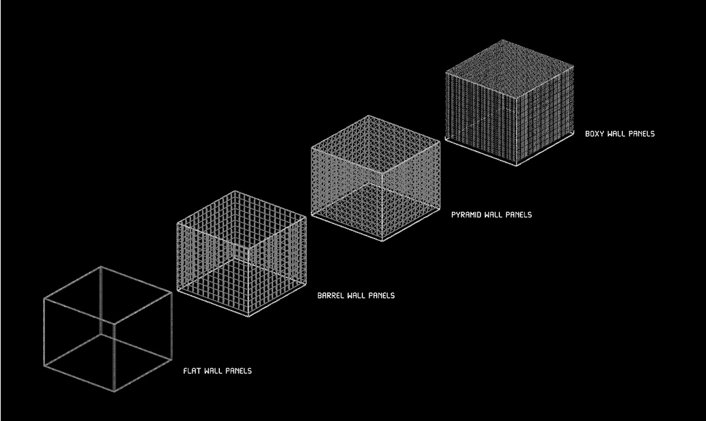
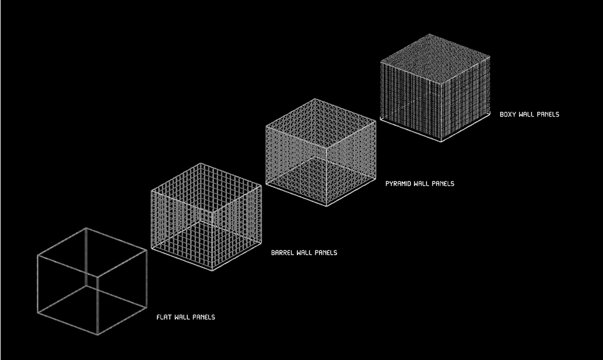

We simulated and compared geometric shapes for optimized sound diffusion with customized post processing script over pachyderm acoustic. All the panels are ... fabricated for showcase. The application of this research could be implemented in the designing of spaces which require optimum diffused sound.
I.D: Boxy Acoustic Panel
Date: 16/02/2022
Fabrication Material: XPS
Milling Process: Robotic
Global Dimensions: 210 x 210 x 50 mm
Stock Cut-off: 32.8 %
Max.Diffusion: 60 %